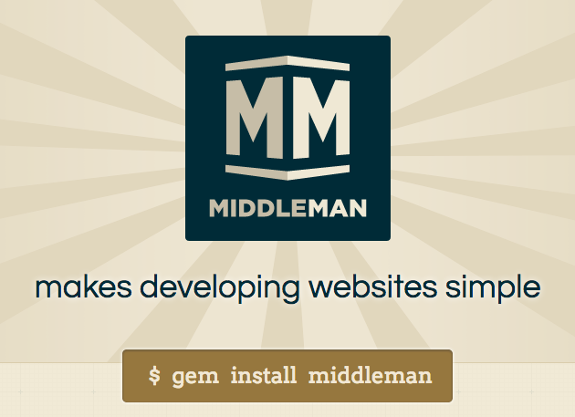

新版博客发布，使用Middleman做为博客引擎
在使用 Octopress 写博客 2年之后，有很多的新技术涌现，我决定更新一下博客引擎，并重新设计界面。
需要的功能
- 因为是个人博客，所以静态博客就可以了，不用买主机买空间，绿色环保
- 支持独立域名，能自动分类，打标签
- 以为有技术博客可能会贴些代码需要支持markdown，语法高亮
- 支持Sass, CoffeScript，方便写样式，排版布局
- 支持开发，商业代码分离（技术洁癖）
- 方便发布，一个命令行搞定
- 容易功能扩展，比方增加个热帖排行榜之类
- 容易升级依赖包，使用最新技术
- 开发友好，支持开发状态代码有改动时浏览器自动刷新（LiveReload）
比较各个工具的优缺点
这里调查了一下几个可以使用写静态博客的工具
Jekyll
优点
集成了博客系统
缺点
Octopress 对Sass不支持，而且对livereload不友好，需要单独启动一个guard来运行，并且我尝试过仍然有问题。适合中级用户可配置度高。
Octopress
Octopress是基于Jekyll开发的，增加了很多新功能，后来jekyll版本升级后自己支持了很多功能，现在两个工具渐渐脱离， Octopress也没有使用最新的Jekyll版本。但是Octopress最好的就是你不用管内部如何运作，你只要写你的博文就行了。 他是一个成熟的博文系统，你只要用她来运营就行了。
优点
所有的功能都已经集成，不需要特殊的技术适合小白，按照安装步骤走就可以生成一个很方便好用的博客，我也是从这里开始的。
缺点
没有使用最新的Jekll，还在使用很早的版本； 目录结构独立设计难以转换成Rails代码。
Yeoman
比较有名的是 Assemble，她集成了 Yeoman, Grunt, Nodejs 等后端JS技术，可以生成静态网站。 她有一些增强插件如果整合less，bootstrap等能快速开发一个站点。
优点
轻量，方便，可配置度高。
缺点
没有集成可以马上使用的blog系统，不适合初级用户。
Middleman
优点
与 Rails 目录架构相似，很多方法名字用法都相同，很容易以后改成 Rails 框架的动态页面。 可以方便的使用别的Gem，内置了haml, slim, liquid等多种模板语言的支持。
缺点
没有提供Octopress内所有的功能，需要自己完善，但是难度不是很大。
最终方案
在尝试使用 Jekyll 之后，最终决定使用 Middleman 因为我熟悉Rails这套机制，所以基本没有什么入门难度。
如果你熟悉Nodejs或者你懂Javascript，那么Assemble应该更加适合，不用找最好的，找到适合自己的。

- 使用
middleman-blog作为博客引擎; - 使用
middleman-syntax高亮语法; - 使用
middleman-deploy快速部署，增强国内用户体验部署移到 Gitcafe; - 原有
Octopress使用了分类列表，middleman-blog不支持分类，所有使用了标签云; - 使用 Bootstrap 作为CSS框架，重新设计了UI，支持手机用户访问;
- 每个页面支持 QRcode，支持微信扫一扫分享;
- 博文页面支持 百度分享;
- 移植了
include_code功能。Octopress中是使用liquid来实现的，移植后的代码是直接使用ruby代码来实现的，所以需要把文件名加上.erb作为后缀。
require 'pathname'
class IncludeCode < Middleman::Extension
def initialize(app, options_hash={}, &block)
super
app.set :code_dir, 'downloads/code'
end
helpers do
def include_code(filename, title: nil, lang: nil)
code_path = Pathname.new( __FILE__ + "../../../source/#{code_dir}/").expand_path
file = code_path + filename
filetype = lang
if File.symlink?(code_path)
return "Code directory '#{code_path}' cannot be a symlink"
end
unless file.file?
return "File #{file} could not be found"
end
Dir.chdir(code_path) do
code = file.read
filetype = file.extname.sub('.','') if filetype.nil?
title = title ? "#{title} (#{file.basename})" : file.basename
url = "/#{code_dir}/#{filename}"
source = "<figure class='code'><figcaption><span>#{title}</span> <a href='#{url}'>源码</a></figcaption>"
source += "\n\n``` #{filetype}\n"
source += code
source += "\n```\n"
source += "</firgure>"
end
end
end
end
::Middleman::Extensions.register(:include_code, IncludeCode)
TODO
- 移植其他代码，比如显示gist
- 首页单独设计
{kind=link}